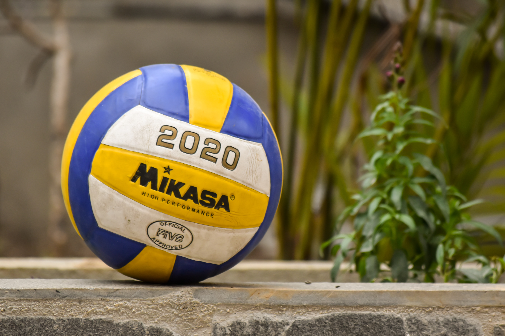

Throwball.
By - Pooja Abhonkar.

Throw ball is a non-contact ball sport played across a net between two teams of nine players on a rectangular court. It is popular in Asia, especially on the Indian subcontinent, and was first played in India as a women's sport in Chennai during the 1940s. Like volleyball, the game's roots are linked with the YMCA. Both volleyball and Newcomb ball, while older games, share many similarities with throw ball.
History.
According to the Throw ball Federation of India, throw ball is thought to have been drawn from a recreational sport popular among women in England and Australia during the 1930s. The YMCA brought the game to Chennai, where it was played as a women's sport in the 1940s. Harry Crowe Buck, who had founded the YMCA College of Physical Education in Chennai, drafted guidelines for throw ball rules and regulations in 1955. The game reached Bangalore in the 1950s.
Throw ball Federation of India (TFI) was formed along with the Indian National Throw ball Championship. By 1990 throw ball in India had become a sport for both men and women.
Play.
The playing court is somewhat larger than a volleyball court at 12.20 by 18.30 metres (40.03 ft × 60.04 ft) with a neutral box 1 metre (3 ft 3.37 in) on either side of the center. The height of the net is 2.2 metres (7.22 ft). The ball is similar to a volleyball but may be slightly larger. While in volleyball the ball is hit or volleyed throughout play, in throw ball the ball is thrown over the net, where a member of the other team tries to catch the ball and quickly throw it back across the net.